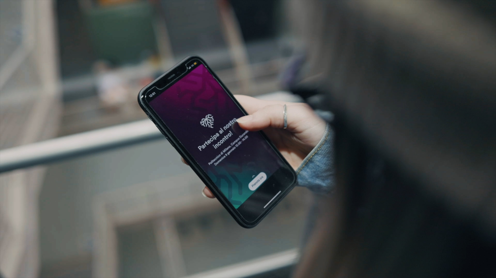
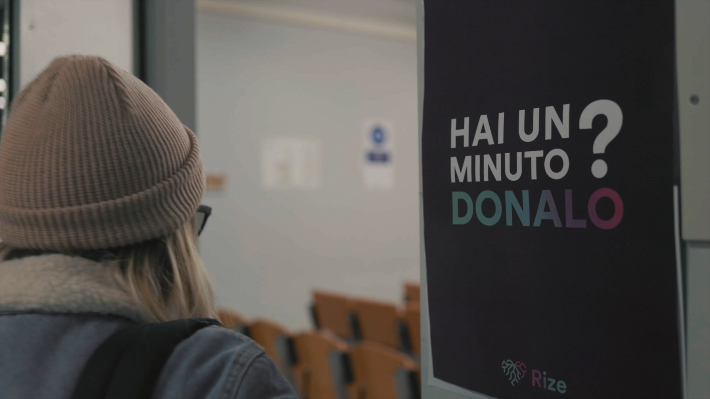
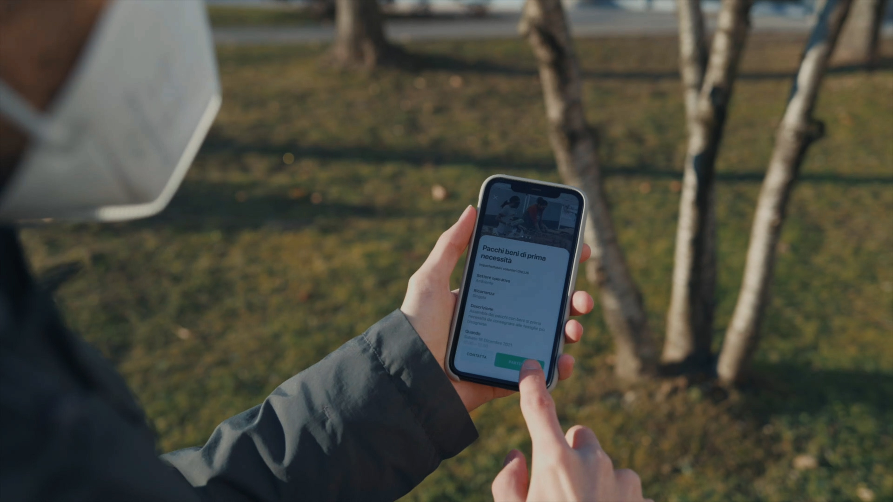
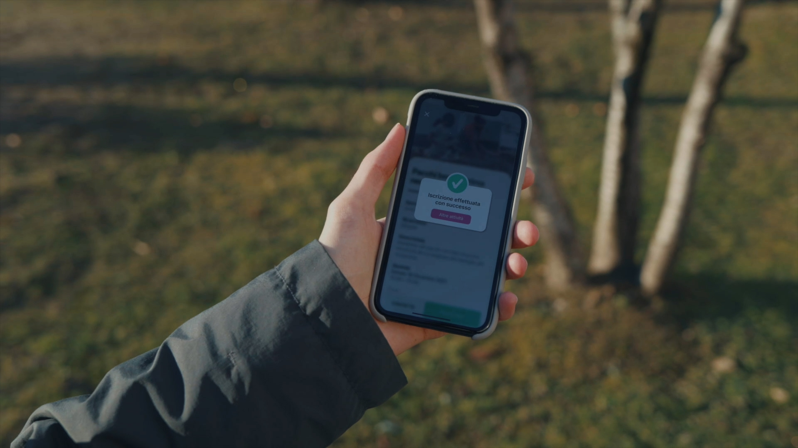
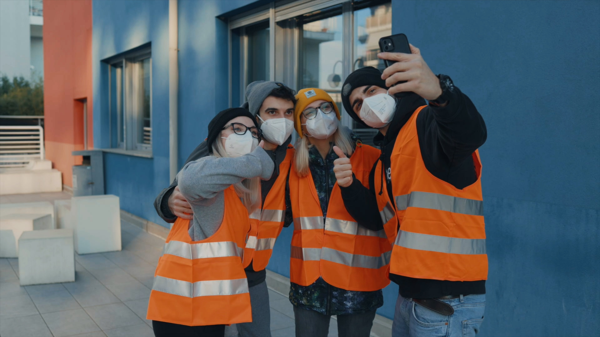
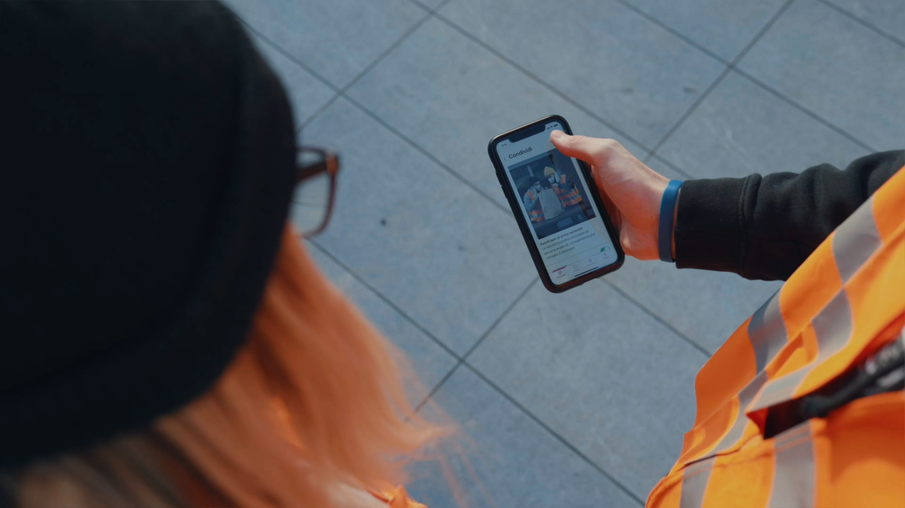
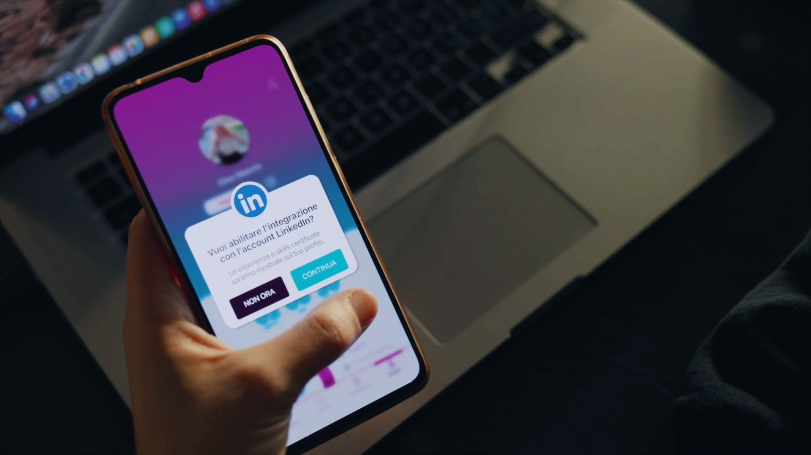
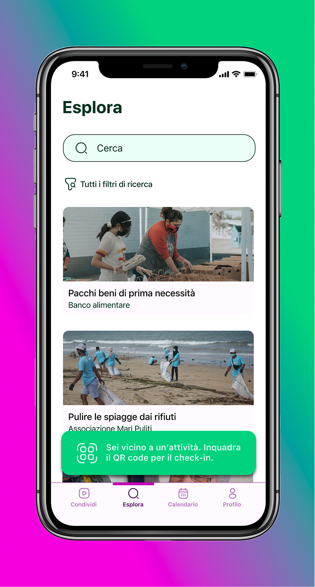

Rize
UX and UI design
System design
System design
2022
Brief
Starting from researching society's problems, identify a space for action to fit
in to improve people's lives. Study the target audience, the customer journey,
and the problems, needs, and opportunities that a given area offers.
Finally, build a system that can take advantage of those opportunities and solve the issues.




Concept
How does someone approach volunteering? Today, unfortunately, approaching this world is often complicated;
there is no platform targeted to accommodate all opportunities to help.
And that's where Rize comes in, the integrated multichannel system to help you to help.
Rize encapsulates all the volunteering opportunities offered by organizations: users have
the ability to filter what they are most interested in, based even on time and location,
and quickly get in touch with the organization thanks to in-app sign-up for volunteering events.



Rize
Rize aims to make volunteering simple, social, and useful.
An in-app sharing section allows users to see what other users are
doing during their volunteer experiences, which enables the user to
see if the same experience might be of interest to them as well.
Rize is working with LinkedIn to offer a certification service via
blockchain of the hours spent volunteering, also certifying the soft
skills put in. In this way, the good done comes back to you: in addition
to helping others, you help make your resume more interesting.



Team
Clara Di Bella / Giorgia Maggiolini / Giovanni Malausa / Paola Rapino / Francesco Scarfone / Matteo Semeraro